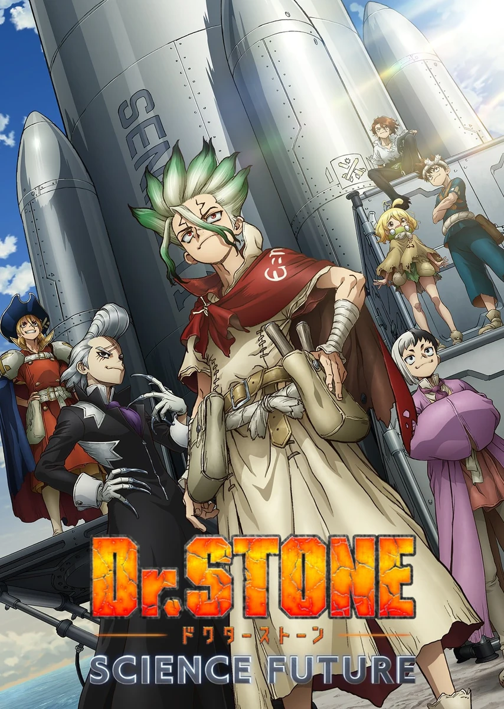

COMPLETE RECORD · Pages 轻量资料
石纪元 科学与未来 第3部分
Dr.STONE SCIENCE FUTURE 第3クール
别名
- Dr. STONE: SCIENCE FUTURE Part 3
- 新石纪 科学与未来 第3部分
- 石纪元 第四季 第3部分
- 新石纪 第四季 第3部分
- Dr. Stone: Science Future 3
- 形式
- TV
- 首播
- 2026-04-02
- 集数
- 13 集
- 评分
- 7.2
- 评分人数
- 1657
SYNOPSIS
简介
为了取得打造宇宙船所需的材料，以及从世界各地的石化中复活人类以获得更多人力，千空等人分成三队，开始环游世界。他们为了取得登陆月球所不可或缺的力量—「数学力」，前往「印度」。千空等人究竟能否登上月球，揭开「为什么人（Whyman）」的真相！？
[简介原文] 石器時代から現代文明まで、科学史200万年を駆け上がる！前代未聞のクラフト冒険譚（アドベンチャー）、ここに開幕！ 全人類石化の黒幕・ホワイマンが月にいると突き止めた千空は、全ての謎を暴くため『月面着陸計画』を始動！この石の世界（ストーンワールド）で、ゼロから宇宙船を作るビックプロジェクトへと乗り出した。 世界中から宇宙船の素材を集めるため、大海原へと飛び出した千空たち。最初の目的地・アメリカ大陸でDr.ゼノ率いる科学王国と対立し、科学vs.科学の速攻戦を繰り広げる。 さらに石化光線の発信源・南米で、スタンリー部隊と衝突！激しい戦いの末、世界中の人間は再び全て石になった――。 絶望的な状況下、スイカがたった一人で科学を繋ぐ希望となり、千空を目覚めさせた。 Dr.ゼノと最強タッグを組んだ科学王国が最後に挑むのは、最高難度の“月面ロケット”作り！ ついに、石の世界（ストーンワールド）から宇宙、そして月へ――。千空は全人類の未来を取り戻すため、ホワイマンと石化の謎、その核心へと迫る‼
EPISODE LOG
正片章节
已收录 13 条正片章节
- 1未来引擎 首播：2026-04-02时长：24 分钟
- 2点火 首播：2026-04-09时长：24 分钟
- 3宇宙是用数学这种语言写成的 首播：2026-04-16时长：24 分钟
- 4电脑的黎明 首播：2026-04-23时长：24 分钟
- 5火箭的真相 首播：2026-04-30时长：24 分钟
- 6STONE TO SPACE 首播：2026-05-07时长：24 分钟
- 7UNKNOWN KNOWN 首播：2026-05-14时长：24 分钟
- 8科学的挑战者 首播：2026-05-21时长：24 分钟
- 9我想要全部 首播：2026-05-28时长：24 分钟
- 10倒计时 首播：2026-06-04时长：24 分钟
- 11GIANT STEP 首播：2026-06-11时长：24 分钟
- 12WHYMAN 首播：2026-06-18时长：24 分钟
- 13让人对未来跃跃欲试的东西 首播：2026-06-25时长：24 分钟